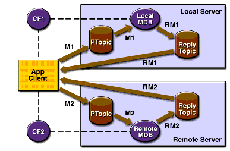

An Application Example That Deploys a Message-Driven Bean on Two J2EE Servers
This section, like the preceding one, explains how to write, compile, package, deploy, and run a pair of J2EE applications that use the JMS API and run on two J2EE servers. The applications are slightly more complex than the ones in the first example.
The applications use the following components:
- An application client that is deployed on the local server. It uses two connection factories--one ordinary one and one that is configured to communicate with the remote server--to create two publishers and two subscribers and to publish and to consume messages.
- A message-driven bean that is deployed twice: once on the local server, and once on the remote one. It processes the messages and sends replies.
In this section, the term local server means the server on which both the application client and the message-driven bean are deployed (
earthin the preceding example). The term remote server means the server on which only the message-driven bean is deployed (jupiterin the preceding example).The section covers the following topics:
You will find the source files for this section in
<INSTALL>/j2eetutorial14/examples/jms/sendremote/. Path names in this section are relative to this directory.Overview of the Applications
This pair of applications is somewhat similar to the applications in An Application Example That Consumes Messages from a Remote J2EE Server in that the only components are a client and a message-driven bean. However, the applications here use these components in more complex ways. One application consists of the application client. The other application contains only the message-driven bean and is deployed twice, once on each server.
The basic steps of the applications are as follows.
- You start two J2EE servers, one on each system.
- On the local server (
earth), you create two connection factories: one local and one that communicates with the remote server (jupiter). On the remote server, you create a connection factory that has the same name.- The application client looks up the two connection factories--the local one and the one that communicates with the remote server--to create two connections, sessions, publishers, and subscribers. The subscribers use a message listener.
- Each publisher publishes five messages.
- Each of the local and the remote message-driven beans receives five messages and sends replies.
- The client's message listener consumes the replies.
Figure 34-4 illustrates the structure of this application. M1 represents the first message sent using the local connection factory, and RM1 represents the first reply message sent by the local MDB. M2 represents the first message sent using the remote connection factory, and RM2 represents the first reply message sent by the remote MDB.

Figure 34-4 A J2EE Application That Sends Messages to Two Servers
Writing the Application Components
Writing the components of the applications involves two tasks:
Coding the Application Client: MultiAppServerClient.java
The application client class,
multiclient/src/MultiAppServerClient.java, does the following.
- It uses the JNDI naming context
java:comp/envto look up two connection factories and a topic.- For each connection factory, it creates a connection, a publisher session, a publisher, a subscriber session, a subscriber, and a temporary topic for replies.
- Each subscriber sets its message listener,
ReplyListener, and starts the connection.- Each publisher publishes five messages and creates a list of the messages the listener should expect.
- When each reply arrives, the message listener displays its contents and removes it from the list of expected messages.
- When all the messages have arrived, the client exits.
Coding the Message-Driven Bean: ReplyMsgBean.java
The
onMessagemethod of the message-driven bean class,replybean/src/ReplyMsgBean.java, does the following:On both servers, the bean will consume messages from the topic
jms/Topic.Creating and Packaging the Applications
This example uses the connection factory named
jms/ConnectionFactoryand the topic namedjms/Topic. These objects must exist on both the local and the remote servers. If you need to, you can create the objects there using the Admin Console, as described in Creating JMS Administered Objects.This example uses an additional connection factory,
jms/JupiterConnectionFactory, which communicates with the remote system; you created it in Creating Administered Objects for Multiple Systems. This connection factory needs exist only on the local server.Creating and packaging this application involve six steps:
You can package the applications yourself as an exercise. Use the
asantbuildtargets in themulticlientandreplybeandirectories to compile the source files.This section uses the prepackaged EAR files to show how to create and package the applications. You can use the systems
earthandjupiterfor the local and remote systems.The Application Server must be running on both systems. You package, deploy, and run the application from the local system.
Examining the Applications
- In
deploytool, on the local system, open the two EAR filesMultiClientApp.earandReplyBeanApp.ear, which reside in the directory<INSTALL>/j2eetutorial14/jms/provided-ears.- In
MultiClientApp.ear, select the application client node,MultiAppServerClient.
- Click the Resource Ref's tab. The client looks up two connection factories and casts them to objects of type
javax.jms.ConnectionFactory. The coded namejms/ConnectionFactory1refers tojms/ConnectionFactory, and the coded namejms/ConnectionFactory2refers tojms/JupiterConnectionFactory.- Click the Msg Dest Ref's tab. The coded name
jms/TopicNamerefers to the target destinationPhysicalTopic. Its type isjavax.jms.Topic, and its usage is set to Produces.- Click the Message Destinations tab, and then click
PhysicalTopic. The client appears in the Producers area. It refers to the JNDI namejms/Topic. This is the destination where messages are sent. Replies will come to a temporary destination.- In
ReplyBeanApp.ear, expand theMDBJARnode and selectReplyMsgBean.
- Click the Message-Driven tab. The bean uses the
PhysicalTopictarget destination and the connection factoryjms/ConnectionFactory.- Click the Resource Ref's tab. The bean uses the connection factory
jms/ConnectionFactoryto send reply messages. The bean looks up the coded namejms/MyConnectionFactoryand casts the object to an object of typejavax.jms.ConnectionFactory. The bean does not look up a topic for the reply messages; instead, it uses the temporary topic specified in the incoming message'sJMSReplyToheader field.- Click the Transactions tab. The bean uses container-managed transactions.
- Select the
MDBJARnode, click the Message Destinations tab, and then clickPhysicalTopic. The message-driven bean appears in the Consumers area. The destination refers to the JNDI namejms/Topic.- Select the
ReplyBeanAppnode and click Sun-specific Settings on the General page. The JNDI name for the message-driven bean is the topic destination resource,jms/Topic.Verify that the JNDI names for the applications are correct.
The Application pane for
ReplyBeanAppshould appear as shown in Table 34-7.
ReplyMsgBeanjms/Topic
The References pane for
ReplyBeanAppshould appear as shown in Table 34-8.
ReplyMsgBeanjms/MyConnectionFactoryjms/ConnectionFactory
Select the
MultiClientAppapplication and click the JNDI Names tab.The JNDI names for the application should appear as shown in Table 34-9. Only the References pane has any content.
Deploying the Applications
To deploy the
MultiClientAppapplication and theReplyBeanAppapplication on the local server, perform the following steps for each application:
- Make
localhostthe current target server by selecting it and choosing FileSet Current Target Server.
- Save the application.
- Choose Tools
- Type your administrative user name and password (if they are not already filled in).
- For the
MultiClientAppapplication, select the Return Client Jar checkbox in the Application Client Stub Directory area. If you wish to run the client in a directory other than the default, click Browse and use the file chooser to specify it.- Click OK.
- In the Distribute Module dialog box, click Close when the process completes. For the
MultiClientAppapplication, you will find a file namedMultiClientAppClient.jarin the specified directory.Before you can deploy the
ReplyBeanAppapplication on the remote server, you must add the remote server. If you did not do so before, perform the following steps:To deploy the
ReplyBeanAppapplication on the remote server, perform the following steps:
- Make the remote server the current target server by selecting it and choosing File
- Select the application.
- Choose Tools
- Type your administrative user name and password (if they are not already filled in), and click OK.
- In the Distribute Module dialog box, click Close when the process completes.
Running the Application Client
To run the client, use the following command:
On the local system, the output of the
appclientcommand looks something like this:Sent message: text: id=1 to local app server Sent message: text: id=2 to remote app server ReplyListener: Received message: id=1, text=ReplyMsgBean processed message: text: id=1 to local app server Sent message: text: id=3 to local app server ReplyListener: Received message: id=3, text=ReplyMsgBean processed message: text: id=3 to local app server ReplyListener: Received message: id=2, text=ReplyMsgBean processed message: text: id=2 to remote app server Sent message: text: id=4 to remote app server ReplyListener: Received message: id=4, text=ReplyMsgBean processed message: text: id=4 to remote app server Sent message: text: id=5 to local app server ReplyListener: Received message: id=5, text=ReplyMsgBean processed message: text: id=5 to local app server Sent message: text: id=6 to remote app server ReplyListener: Received message: id=6, text=ReplyMsgBean processed message: text: id=6 to remote app server Sent message: text: id=7 to local app server ReplyListener: Received message: id=7, text=ReplyMsgBean processed message: text: id=7 to local app server Sent message: text: id=8 to remote app server ReplyListener: Received message: id=8, text=ReplyMsgBean processed message: text: id=8 to remote app server Sent message: text: id=9 to local app server ReplyListener: Received message: id=9, text=ReplyMsgBean processed message: text: id=9 to local app server Sent message: text: id=10 to remote app server ReplyListener: Received message: id=10, text=ReplyMsgBean processed message: text: id=10 to remote app server Waiting for 0 message(s) from local app server Waiting for 0 message(s) from remote app server Finished Closing connection 1 Closing connection 2On the local system, where the message-driven bean receives the odd-numbered messages, the output in the server log looks like this (wrapped in logging information):
In ReplyMsgBean.ReplyMsgBean() In ReplyMsgBean.setMessageDrivenContext() In ReplyMsgBean.ejbCreate() ReplyMsgBean: Received message: text: id=1 to local app server ReplyMsgBean: Received message: text: id=3 to local app server ReplyMsgBean: Received message: text: id=5 to local app server ReplyMsgBean: Received message: text: id=7 to local app server ReplyMsgBean: Received message: text: id=9 to local app serverOn the remote system, where the bean receives the even-numbered messages, the output in the server log looks like this (wrapped in logging information):
In ReplyMsgBean.ReplyMsgBean() In ReplyMsgBean.setMessageDrivenContext() In ReplyMsgBean.ejbCreate() ReplyMsgBean: Received message: text: id=2 to remote app server ReplyMsgBean: Received message: text: id=4 to remote app server ReplyMsgBean: Received message: text: id=6 to remote app server ReplyMsgBean: Received message: text: id=8 to remote app server ReplyMsgBean: Received message: text: id=10 to remote app serverUndeploy the applications after you finish running the client.
All of the material in The J2EE(TM) 1.4 Tutorial is copyright-protected and may not be published in other works without express written permission from Sun Microsystems.